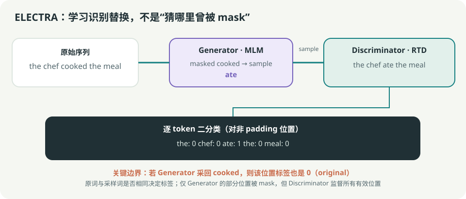

1. 从 MLM 的稀疏目标位置出发
标准 BERT MLM 从输入中选约 15% 的 token 位置，使用双向 Encoder 的隐藏状态恢复它们的原始 ID。未选中位置并非“不参与训练”：它们参与注意力与上下文构建，只是不直接承担词表交叉熵目标。ELECTRA 改变的是每个位置接受何种直接监督。
假设原句是 the chef cooked the meal。若生成器把 cooked 换成了 ate，判别器看到 the chef ate the meal，要判断每个位置是否来自原始输入。和 MLM 不同，它不需要对整个词表进行“原词是什么”的分类；在每个位置做 real/replaced 二分类即可。

2. 两个 Encoder 的分工：小 Generator 和主 Discriminator
ELECTRA 的预训练由两个不同职责的网络组成。Generator G 接收掩码后的序列，使用 MLM 在选定位置预测词表概率分布，然后从分布中采样一个 token ID；这些采样结果替换输入中相应位置。Discriminator D 接收这个完整的“可能受损”序列，对每个非 padding token 输出一个二分类 logit。
Generator 通常比 Discriminator 小，其目的是在有限预算内产生具有一定迷惑性的负例，而不是成为最终部署模型。两者通过各自损失一起训练；生成采样的离散选择一般不把梯度从判别器直接反传穿过采样操作。最终下游微调通常只保留 Discriminator 的 Encoder，丢弃 Generator 与预训练时的二分类头。
若 Generator 太弱，负例可能荒谬，判别器过于容易；若 Generator 太强，生成过程本身消耗大量预算，并且常常采样到真实 token，使被替换标签更少。原论文比较了 Generator 与 Discriminator 容量配比，这也是训练效率设计的一部分。
3. 最容易写错的一点：曾被选中不等于真的被替换
定义原始 token x_i 和 Generator 采样后输入 token x̃_i。若二者不同，RTD 的 replaced 标签为 1；若相同则为 0。即使一个位置被选进 MLM 子集，Generator 最后采样得到原词，它对于 Discriminator 仍然属于 original。
如果某个原始词是 cooked，Generator 在该处又采样出 cooked，该位置标签是 0；采样出 ate，则标签是 1。判别器目标不是“预测哪些位置曾被 mask”，而是“对受损输入中的每个实际词形判断是否与原文相同”。
RTD 损失通常只在真实 token 位置统计，不在 padding 上训练；在常见配置下，各个有效 token 都会有二分类标签。由于大部分输入来自原词，类别往往明显不平衡，应同时观察 replaced 与 original 的召回、precision 或分层错误，而不只看总体 accuracy。
4. 联合优化：Generator 的 MLM 与 Discriminator 的 RTD
Generator 在抽到的掩码位置上做词表预测，得到 MLM loss；Discriminator 在全部有效输入位置上做真假判别，得到 RTD 二分类 loss。训练目标通常写作：
Google 官方预训练参考实现的默认权重是 gen_weight=1.0 和 disc_weight=50.0。这两个系数补偿了目标和归一化尺度的差别，不是“判别器总损失一定比生成器重要 50 倍”的普遍结论；不同实现的 loss reduction 方式变化时，需要重新校准。
判别器的单位置二分类损失（这里 y=1 代表 replaced、D_i 是该位置被替换的概率）为：
有些代码约定 y=1 为 real，因此在阅读实现时必须检查 sigmoid 输出语义与标签构造，不要只看变量名 labels 就认为正类和本文一致。
5. 为什么让 Generator 采样，而不是取词表 argmax
如果总选择概率最高的词，替换分布可能过于单一，判别器更容易记住某些固定替换模式。采样保留了不确定性，使模型面对多种语法与语义上都可能成立的候选词。训练时的受损输入可能完全自然，判别器需要学习更细致的上下文兼容性。
但并非每个 sampled token 都是假 token：Generator 可能恰好采到原 token，标签仍为 original。也并非所有“语义不通”都是被替换样本，因为原始自然语料自身可能不完美。RTD 训练信号来自构造过程的 token 身份，而不是人工评定文本是否正确。
这说明 ELECTRA 不是标准 GAN：Generator 主要由 MLM 目标训练，不是通过对判别器的对抗性梯度直接学习生成难例。它们在同一个预训练流程里协作构造判别任务，但“Generator-Discriminator”名称不能替代具体的优化结构。
6. 为什么更密集的监督可能提高数据利用率
MLM 在约 15% 位置承担直接词表预测损失；RTD 对绝大多数有效位置都有二分类监督。监督位置更多并不代表梯度信息或计算收益按 1/0.15 线性增加。判别目标更简单、类别不平衡、Generator 的额外计算和样本质量都影响真实效率。
ELECTRA 原论文在不同计算预算与规模上报告 RTD 特别适合预算受限的文本 Encoder 预训练，并将模型与相近计算预算的 MLM baseline 比较。但论文结论的正确表述是“在指定训练/下游评估协议下有更高样本/计算效率”，不是“每个 token 都直接训练，因此所有任务必然提升 6.7 倍”。
另一个重要的成本事实：预训练时需要同时运行 Generator 与 Discriminator，下游推理则只保留 Discriminator。这是为什么不能把预训练双网络成本直接当作部署模型的推理成本。
7. 下游微调与普通 BERT 有什么不同
预训练结束后取 Discriminator 的 encoder 参数，按照具体任务安装序列级分类头、每 token 标签头或 QA 起止头，并端到端微调。与 BERT 微调的总体流程相似：输入仍是 token IDs、attention mask 等，输出由任务头决定。
迁移时必须配套 ELECTRA checkpoint 的 tokenizer 与配置；即使官方原始英文模型沿用 BERT uncased 词表，也不能将所有社区 ELECTRA 模型推广成统一词表。也不应该在预测阶段继续运行 Generator 制造假 token，除非有明确另一个实验目的。
对于文本生成任务，ELECTRA 的判别器不提供自回归 next-token probability 接口，因此不能直接把它当作一个自回归 decoder。
8. 失败模式与核查边界
- 生成器过弱：替换样本太容易，判别器可能学会辨别明显异常而非深入理解上下文。
- 生成器过强：消耗更高训练 FLOPs，并可能更常采到原词。
- 类不平衡：高总体准确率可能来自永远预测 original；应报告 replaced 类精确率与召回率。
- 标签构造错误：把“被 mask 的位置”全部标成 replaced 会误标 Generator 采回原 token 的情况。
- 推理接口错位：将预训练 Generator 或 RTD head 当作下游分类器会混淆目标与部署阶段。
9. 交互：同样被选中的位置，为什么标签会不同
RTD 标签检查
原句：the chef cooked the meal；训练时 selected position 为 cooked。
原词 cooked → Generator 采样 ate 判别器输入：the chef ate the meal cooked 所在位置被真正替换，RTD 标签 y=1（replaced）。 其他有效位置与原文相同，标签 y=0（original）。
10. 交互：类别不平衡下的准确率陷阱
8 个有效位置，2 个被选为生成目标（教学示意）
toy 输入：8 个真实 token，其中 2 个位置被选入 MLM 子集；真实选词比例约 15%，这里取整数便于核算。
有效位置 8 个；replaced = 1，original = 7。 若模型永远预测 original：accuracy = 7/8 = 87.5%； 但 replaced 类召回率 = 0/1 = 0%。单看 accuracy 会掩盖漏检。
关键结论
- Generator 用 MLM 采样替换候选；Discriminator 对全部有效位置做 real/replaced 二分类。
- RTD 标签取决于采样后 token 是否真的不同于原 token；被选中但采回原词应标 original。
- 生成器 MLM 与判别器 RTD 联合训练，官方实现默认
gen_weight=1、disc_weight=50；实现的 loss 约定必须核对。 - 预训练需要两个网络，微调/推理一般仅保留 Discriminator，不能把它当作自回归语言模型。
原始论文与官方代码
- Clark et al., ELECTRA: Pre-training Text Encoders as Discriminators Rather Than Generators, §2–4、Figure 2。
- Google Research, run_pretraining.py（sampled token、is_fake label、combined loss）。
- Google Research, configure_pretraining.py（Generator/Discriminator loss weights）。
- Devlin et al., BERT, §3.1（MLM 对照）。